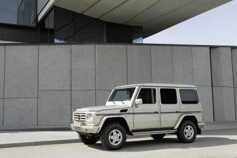

Guard
Inget skyddar mer
Nyheter
Nya E-Guard
Nu erbjuder Mercedes-Benz även världens mest framgångsrika statslimousine som den armerade specialmodellen E-Guard. Utifrån är den identisk med seriemodellen men under plåten döljer sig en mängd intelligent skyddsutrustning av specialstål och aramid. Även rutorna i polykarbon runt om ingår i detta skydd. Därmed erbjuder de nya E-Guard-limousinerna sina passagerare ett effektivt skydd mot den ständigt ökande kriminaliteten på gatorna. Den nya Guard-modellen är en fortsättning på Mercedes-Benz åtta decennier långa erfarenhet att utveckla och bygga specialskyddsfordon.
S 600 Pullman Guard – den nya statslimousinen med maximalt skydd
Elegansen överträffas bara av säkerheten. Den nya representativa statslimousinen S 600 Pullman Guard med integrerat maximalt skydd är baserad på det långa utförandet i S 600, men har ett extra långt axelavstånd och ett förhöjt tak. Det generösa Pullman-formatet erbjuder lyxkomfort för passagerare av rang. I limousinen finns även ett komplett utrustat mobilt kontor.
S 450 CDI Guard – armerad lyxklass med dieselmotor
Mercedes-Benz är först med att kombinera kraften hos en dieselmotor i lyxsegmentet med den enastående säkerheten hos ett specialskyddsfordon. V8-CDI-motorn ger S 450 CDI Guard en utomordentlig prestanda, gynnsamma förbrukningsvärden och en imponerande räckvidd. Detta trots att modellen har en betydligt högre vikt än grundmodellen. S-Klassens båda nya Guard-limousiner är resultatet av en 80-årig tradition hos Mercedes-Benz att utveckla specialskyddsfordon med toppmoderna innovationer.
Filosofi
Mercedes-Benz Guard
Mercedes-Benz är världsledande i forskningen om ledande säkerhetsteknik som ökar säkerheten i vardagen. Dessutom lägger vi ned mycket kraft på att skydda våra kunder mot specifika hot: Mercedes-Benz Guard.
Din personliga livvakt
Våra specialskyddsfordon förenar på ett unikt sätt människans längtan efter mobilitet och säkerhet. Mercedes-Benz Guard erbjuder nämligen ett integrerat skydd som byggs in i karossen direkt vid tillverkningen. Resultatet blir en unik originalbil som rättar sig efter dina personliga säkerhetsbehov.
Mercedes-Benz Guard – en förebild sedan mer än 80 år
När vi konstruerade vår första armerade Mercedes i Nürburg 1928 utvecklade vi en princip som gäller än i dag: integrerat skydd redan vid tillverkningen. Mellan Nürburg och i dag har det gått ungefär åtta årtionden med kontinuerligt växande produktions- och utvecklingskompetens. Åtta årtionden med forskning och vidareutveckling i nära samarbete med internationellt erkända myndigheter för att alltid kunna leva upp till ständigt växande hot. Den traditionen förutan vore S-Guard, E-Guard och G-Guard en omöjlighet.
Avgörande för resultatet är tillverkningsprocessen

Stålhöljet som gör din Mercedes-Benz Guard till ett skyddsrum tillverkas i en skarpt avgränsad produktionslinje, och är resultatet av professionellt hantverk och den modernaste tekniken i nära samarbete. Råkarossen är grunden till en mycket självständig bil som står emot extrem belastning. Dessutom utrustas och förstärks bilen med effektiva skyddskomponenter som inte kan nås i efterhand.
Och i varje fas ser våra specialister till att de särskilda kraven på specialskyddet samt Mercedes-Benz kvalitetslöfte efterlevs och förverkligas.
Teknik
Integrerat skydd in i minsta detalj
Materialen som förstärker karossens struktur väljs ut och integreras med största omsorg. Det gäller även de skyddande materialkombinationerna av stål, glas och plastmaterial.
Bevisat intelligenta är de raffinerade konstruktioner och överlappningssystem som effektivt skyddar särskilt utsatta områden på bilen.
De pålitliga nödfunktionssystemen fungerar trots att till exempel däcken är helt lufttomma. Det håller dig mobil också i en nödsituation.
Det höghållfasta specialglaset är splitterskyddat tack vare ett invändigt skikt av polykarbon.
Det helt nyutvecklade specialchassit med extra förstärkningar medför en viktökning på upp till 70 %. Körsäkerheten och åkkomforten håller dock samma höga standard som du har rätt att förvänta dig av en Mercedes.
Från ESP® till ABS: De elektroniska reglersystemen i Mercedes-Benz Guard har omprogrammerats eftersom den ökade vikten ändrar bilens fysikaliska egenskaper.
I S-Guard ingår Mercedes-Benz integrerade säkerhetssystem, vilket betyder samma höga fordons- och trafiksäkerhet som i nya S-Klass i övrigt.
Mercedes-Benz Guard-principen
Beskjutningsprover, kollisionstester och anpassade elektroniska reglersystem. För oss är det en självklarhet att utföra de ändringar som specialskyddet kräver. Det ingår i vår princip om integrerat skydd.
Utvändigt ser Mercedes-Benz Guard ut som en seriebil. Perfekt dolt därunder gör ett nätverk av skyddskomponenter ett specialskyddsfordon från Mercedes-Benz till ett rullande skyddsrum.
Specialskydd med anor
Ända sedan 1929 litar människor på våra specialskyddsfordon. Det är ett förtroende som vi bär med stolthet. Vi lovar att fortsätta göra det. I varje Mercedes-Benz Guard och i alla skyddsklasser.
S-Guard
Säker elegans
S-Klass utanpå, S-Guard inuti. Det går väl knappast att förpacka specialskydd på ett elegantare sätt? I en S-Guard finns alla de bekvämligheter som man förväntar sig av S-Klass. Utsökt komfort, generösa utrymmen och exklusiv utrustning – och därutöver ett specialskydd på högsta nivå.
Det finns tre modeller av S-Guard. Den senaste är S 600 Pullman Guard som är en representativ statslimousine i den högsta skyddsklassen. Karossen bygger på serieversionen av S 600 men axelavståndet är betydligt större och taket förhöjt. Här finns ett inbyggt kontor och en enastående rymlighet, vilket gör S 600 Pullman Guard perfekt för representation.
Kultiverad kraft från en diesel-V8 njuter man av i S 450 CDI Guard. Detta är den första serietillverkade premiumlimousinen med dieselmotor och integrerat skydd. Trots att bilen har en hög vikt ger CDI-motorn utsökta köregenskaper, god räckvidd och högsta komfort.
I S 600 Guard sitter en V12:a med biturbo på 380 kW (517 hk) som utvecklar ett maximalt vridmoment på 830 Nm. Det borgar inte bara för utomordentlig komfort utan även för betryggande kraft i ett skarpt läge.
Omfattande modifikationer i kaross, chassi och bromssystem kompenserar för den extra vikten på upp till 1,5 ton.
E-Guard
Så säker att ingen lägger märke till den
I en värld där faror ständigt lurar vill man känna sig säker. Då är det viktigt med absolut diskretion. Därför ser E-Guard ut som vilken annan E-Klass som helst. Alla komponenter, detaljer och modifikationer som ingår i specialskyddet är perfekt integrerade för att inte kunna uppfattas utifrån.
Integrerat skydd från första början. Långt innan E-Guard får sin slutgiltiga form tar våra ingenjörer sig an den komplexa uppgiften att skapa en perfekt förening av det effektiva skyddet hos ett specialfordon, den högre vikten, det avstämda chassit och de modifierade reglersystemen och E-Klassens alla fördelar, t.ex. komforten och förmågan att fungera väl i vardagen.
Bilen blir därefter måltavla för internationellt erkända organisationer som kontrollerar bilen i dess helhet och certifierar den enligt skyddsklass VR4 enligt kontrolldirektiv BRV 2009. Då kontrolleras ytområden, materialövergångar, funktionella fogar, t.ex. vid dörrarna, från alla möjliga skottvinklar. Dessutom måste bilen klara beskjutning från tre håll och bevisa att den håller måttet enligt certifikatet vid kulregn. Inte nog med det: Vi har med framgång kontrollerat golvets bepansring (tillval) med handgranater av typ DM 51 på flera ställen.
En viktig skyddskomponent: utvecklingskompetensen
E-Guard kan garantera något som en externt modifierad E-Klass aldrig kan: full fabriksgaranti och samtliga servicetjänster som hör till en Mercedes-Benz E-Klass. E-Guard har därmed alla fördelarna hos den mest framgångsrika affärslimousinen i världen, E-Klass. Det gäller såväl de innovativa detaljerna och den dynamiska exteriören som den eleganta och rymliga interiören. Och de fem sittplatserna gör den till en praktisk bil i vardagen. Det finns ett stort utbud av utrustning för komfort och säkerhet för E-Guard. Det är du som får välja hur personlig du vill ha din E-Guard. Kanske föredrar du exklusivpaketet eller designo? Eller någon av utrustningsversionerna Avantgarde eller Elegance?
Det finns tre kraftfulla motorversioner, både för höger- och vänsterstyrda bilar: V6-bensinmotorn E 350, V8-toppmodellen E 500 och den extra snåla V6-dieselvarianten E 350 CDI BlueEfficiency med innovativ motorstyrning för att minska bränsleförbrukningen så mycket som möjligt.
Alla E-Klassens hjälpsystem är tillgängliga trots de skottsäkra rutorna och funktionerna kan utnyttjas fullt ut.
Rutorna på förar- och passagerarsidan öppnas elektriskt. Det finns även fönsterhissar för passagerarna i baksätet som tillval.
Som tillval finns även en kommunikationsanläggning för att kommunicera med personer utanför bilen och ett larmsystem. Larmsystemet aktiverar strålkastarna så att de börjar blinka och utlöser en ljudsignal när du trycker på knappen vid fara.
Sist men inte minst: Punkteringssäkra däck gör att du kan fly från farliga situationer även om du råkar få punktering.
G-Guard
Ditt mobila skyddsrum
{kind=link}
Redan seriemodellen av G-Klass räknas som en av världens mest robusta bilar. Den är därmed den perfekta basen för det omfattande runtomskydd och högeffektiva skyddsrum som kallas G-Guard. Modellen har självklart samma komfortabla invändiga utrustning som G-Klass.
Också tack vare den suveräna V8-motorn bemästrar G-Guard enkelt de mest krävande uppgifter på vägen såväl som i terrängen.
?
Tekniska data
Tekniska data för S-Guard Fordonstyp S-Guard S 600 S 450 CDI
Skyddsklass Skyddsklass VR6/VR7 Skyddsklass VR6/VR7
Antal cylindrar/placering 12/V 8/V
Cylindervolym, cm³ 5 513 3 997
Effekt, kW (hk) vid varv/min 380/5 000 235/3 600
Vridmoment, Nm vid varv/min 830/1 800–3 500 730/2 200
Topphastighet, ca km/h 210 210
Bränsle blyfri 98 diesel
Bränsletankvolym/varav reserv, ca l 90/11 90/11
Tjänstevikt med skyddsklass, kg 3 835 3 860
Tillåten totalvikt, kg 4 300 4 300
Sittplatser 4 4
Tekniska data för E-Guard Fordonstyp E-Guard E 350 CDI E 350 E 500
Skyddsklass Skyddsklass VR4 Skyddsklass VR4 Skyddsklass VR4
Antal cylindrar/placering 6/V 6/V 8/V
Cylindervolym, cm³ 2 987 3 498 5 461
Effekt, kW (hk) vid varv/min 170/3 800 200/6 000 285/6 000
Vridmoment, Nm vid varv/min 540/1 600–2 400 350/2 400–5 000 530/2 800–4 800
Topphastighet, ca km/h 240 240 240
Bränsle diesel blyfri 95 blyfri 95
Bränsletankvolym/varav reserv, ca l 80/9 80/9 80/9
Tjänstevikt med skyddsklass, kg 2 192 2 075 2 130
Tillåten totalvikt, kg 2 620 2 620 2 620
Sittplatser 5 5 5
Tekniska data för G-Guard Fordonstyp G-Guard G 500 G 500
Skyddsklass Skyddsklass VR6 Skyddsklass VR7
Antal cylindrar/placering 8/V 8/V
Cylindervolym, cm³ 4 966 4 966
Effekt, kW (hk) vid varv/min 285/6 000 285/6 000
Vridmoment, Nm vid varv/min 530/2 800–4 800 530/2 800–4 000
Topphastighet, ca km/h 160 160
Bränsle blyfri 95 blyfri 95
Bränsletankvolym/varav reserv, ca l 96/20 96/20
Tjänstevikt med skyddsklass, kg 3 600 4 000
Tillåten totalvikt, kg 4 300 4 300
Sittplatser 5 4
Tillbaka till modellöversikt personbilar